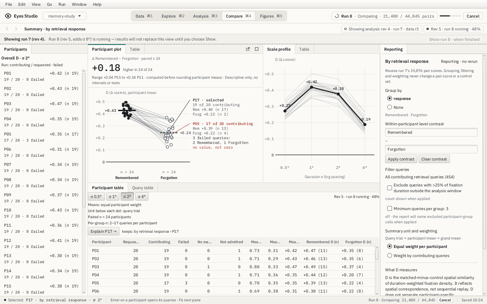
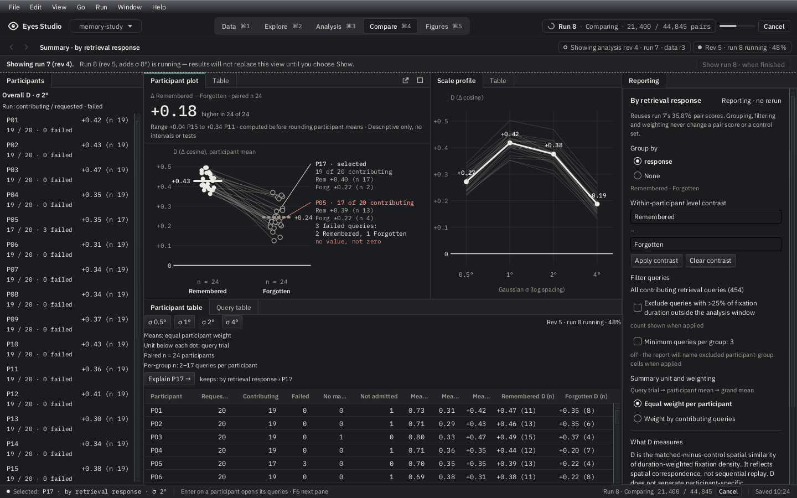
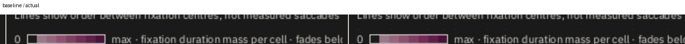

Qualified source 779fb468, tree 7c11aa66. The frozen candidate passed the full canonical and Studio gates, all three hosted courts, the E2E catalogue and documentation consumers. The local Studio gate passed 5,234 tests; the private-density test remained opt-in.
Qualification receipt · Exact hosted artifacts, named cases and runtimes · Signed navigator review and presentation deviation · Scope, reproduction and remaining limits


Both controlled attempts on source 42369cf5 failed transformed 2× canvas-edge comparisons; their immediate repeats passed. The renderer now clears a sampling guard and clips painting to the declared frame. Screenshot dimensions, data coordinates and strict pixel thresholds are unchanged. The byte budget includes the guard.
First failed receipt · Original comparison baseline · First actual · First difference image · Controlled retry failures · Eight deliberately reviewed replacement baselines

The four revised restoration tests run at board and small scene sizes. They allow only declared intermediate panel-size refusal or zero-area Waiting during deliberate undersizing, then require Drawn and original pixels after restoration. Removing the guard makes all four fail. Omitting clipping independently fails both guard-transparency tests.
Native Mac captures are 1024×656: functional execution passes, but small-window readability and the generic portable Results focus model remain tracked. Real-study G2, physical Mac Retina and VoiceOver are separate. Transformed2× snapshots do not establish native HiDPI acceptance; GTK2 has its own analytic raster evidence.